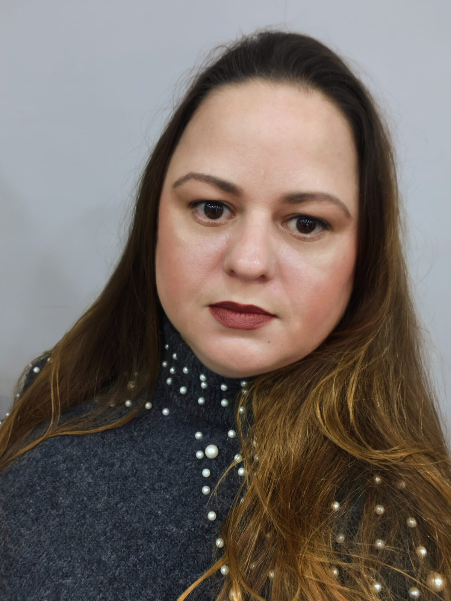

O curso de Desenvolvimento de Sistemas, não tem e nunca teve dono. Conheça as mulheres que moldaram o mundo digital e descubra por que o futuro da tecnologia é feminino.
Descobrir →Elas existiram, existem e provam que a tecnologia sempre foi delas também.
Chegou a hora de acabar de vez com os mitos que afastam meninas da tecnologia.
Ada Lovelace escreveu o primeiro algoritmo da história. As primeiras programadoras do ENIAC eram todas mulheres. A área de computação nasceu nas mãos delas — e precisa delas hoje mais do que nunca.
TI é sobre criatividade, lógica e trabalho em equipe. Design, comunicação, gestão de projetos — há dezenas de áreas que não exigem cálculo avançado, mas exigem exatamente o que você já tem.
Programação, design e IA são habilidades aprendidas — não talentos inatos. Com dedicação e as ferramentas certas (como o ELAS-<TIC>!), qualquer menina pode dominar o universo digital.
Empresas de tecnologia ao redor do mundo buscam ativamente diversidade. Times diversos criam produtos melhores. Sua perspectiva única como mulher é um diferencial, não um obstáculo.
A área de tecnologia é uma das que melhor remunera no Brasil e no mundo. Com a qualificação certa, mulheres em TI alcançam cargos e salários competitivos em qualquer lugar do planeta.
Saúde, moda, agronegócio, arte, educação — toda área usa tecnologia. Ser profissional de TI é ter um superpoder que você pode aplicar em qualquer setor que te apaixone.
existe há mais de 34 anos
E já formou inúmeras alunas que hoje constroem carreiras de sucesso na tecnologia. Leia o relato de uma ex-aluna:

Meu nome é Sueli e é uma alegria muito grande voltar ao COTIL para compartilhar um pouco da minha trajetória com vocês.
Estudei no COTIL entre os anos de 2008 e 2010, cursando o Ensino Médio integrado ao Técnico em Desenvolvimento de Sistemas. Na época, eu já tinha contato com a área de tecnologia: havia feito curso profissionalizante em hardware e já trabalhava com informática, atuando na montagem de computadores em uma loja de vendas online.
Mesmo já estando inserida na área, foi no curso técnico que encontrei a oportunidade de aprofundar conhecimentos e ampliar minha visão sobre tecnologia. Meu objetivo naquele momento era aprender programação e entender melhor como os sistemas eram construídos.
Durante o curso, tive contato com conteúdos que se tornaram fundamentais para toda a minha carreira: lógica de programação, análise de sistemas, linguagens, inglês técnico, banco de dados, SQL e diversos conceitos que continuam presentes no meu dia a dia profissional.
Ainda no último ano do curso surgiu uma oportunidade como Analista de Suporte. Foi um momento importante, porque comecei a perceber que a área de tecnologia oferece caminhos muito mais amplos do que eu imaginava.
Hoje atuo como Analista de Qualidade e Automação, e olhando para trás percebo que um dos maiores diferenciais foi desenvolver uma visão ampla da tecnologia: entender diferentes áreas, conectar conhecimentos e manter uma base sólida para continuar aprendendo e evoluindo.
Se existe algo que eu gostaria de deixar como mensagem, é que o curso técnico pode ser uma grande porta de entrada para inúmeras possibilidades profissionais. Existem muitos caminhos: qualidade, infraestrutura, suporte, dados, automação, produto, análise de negócios, entre tantos outros.
Aproveitem esse período para aprender, testar, perguntar, explorar e construir repertório. Nem sempre sabemos exatamente onde vamos chegar — e tudo bem.
Foi exatamente assim que começou a minha história.
Além da tradição, o COTIL oferece estrutura, flexibilidade e oportunidades reais para quem quer entrar na área de TI.
O ELAS-<TIC> 2026 é o seu ponto de partida. Inscrições gratuitas, agosto de 2026.
Fazer minha inscrição